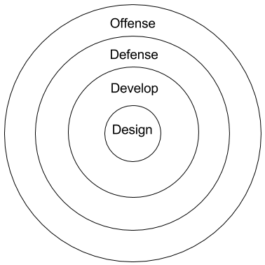
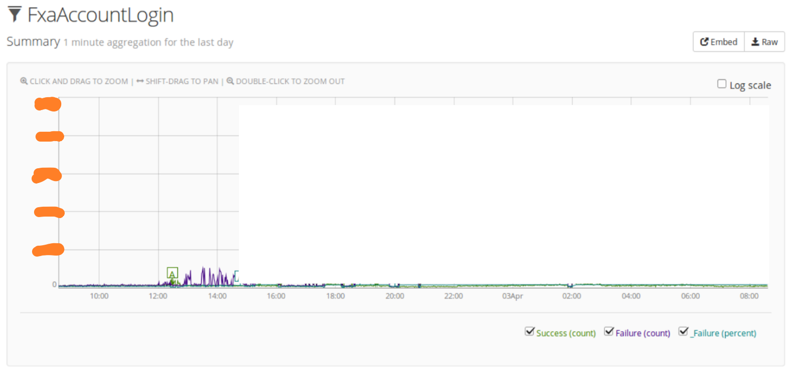
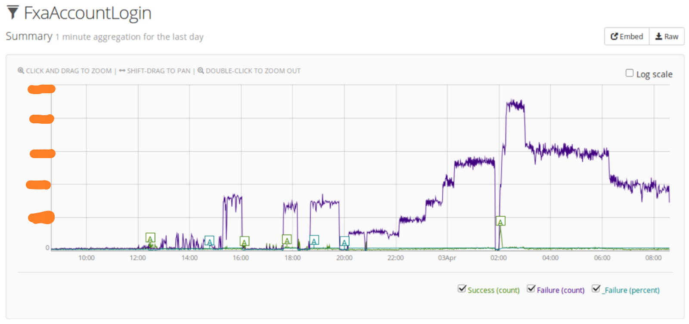
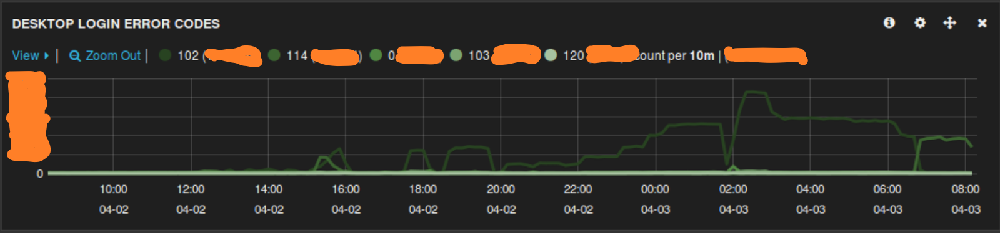
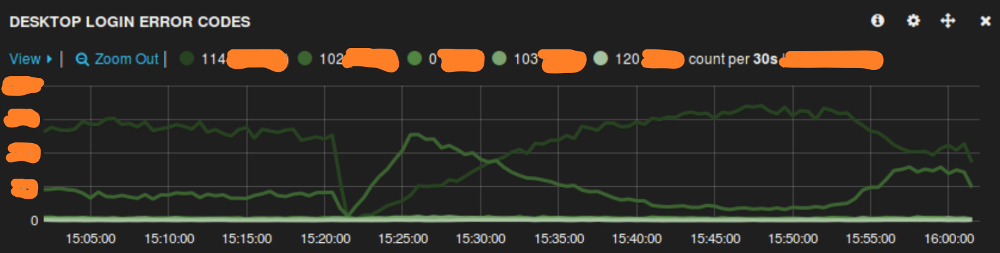
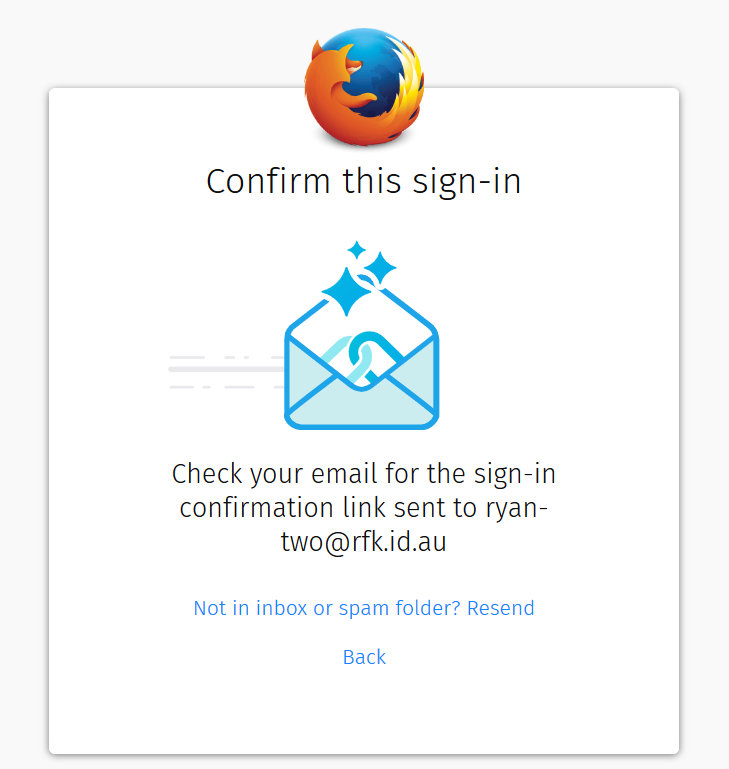

Securing Firefox Accounts
Incidents Survived & Lessons Learned
Ryan Kelly
rfkelly@mozilla.com
@rfkelly
Securing Firefox Accounts
Incidents Survived & Lessons Learned
Ryan Kelly
rfkelly@mozilla.com
@rfkelly
Firefox
I am...
- Engineering lead for Firefox Accounts
- A Unimelb alumnus!
- A security enthusiast
I am...
- Engineering lead for Firefox Accounts
- A Unimelb alumnus!
- A security enthusiast
I am not...
- A security expert
- A lecturer
Conversation Topics
- What is Firefox Accounts?
- How do we keep it secure?
- How has that worked in practice?
- Try to hack me 😃
Firefox Accounts
Firefox Accounts
|
|
⬌ |
|
"Securely syncing your browser data since 2014"
(demo)
Firefox Accounts
- Uses email & password to produce encryption keys
- Browser encrypts data locally
- Encrypted data stored in The Cloud
Firefox Accounts
- Uses email & password to produce encryption keys
- Browser encrypts data locally
- Encrypted data stored in The Cloud
- Also, delegated auth for other services
Is it Secure?
"Security isn't a product, it's a process"
"Security isn't a product, it's a process"
It's also an onion...

Design
Design
- Threat model
- Cryptography
- System Architecture
- User experience tradeoffs
The "onepw" Protocol
The "onepw" Protocol
The "onepw" Protocol
Development
Development
- Security Reviews
- Security-conscious tools
- Automated linting and scans
- Developer Education
Defense
Defense
- Access Controls
- Process Separation
- Rate-limiting
- Anomaly detection
Offense
- Bug Bounty Program
- Security audits and pentests
- Real Life Bad Guys
Bug Bounty
Security Audit
Security Audit
Security Audit
So is it Secure?
Well...
|
|
The Case of the
Disappearing Emoji
The Case of the Disappearing Emoji
The Case of the Disappearing Emoji
The Case of the Disappearing Emoji
Turns out our database chokes on emoji
😞
Turns out our database truncates emoji
😱
The Case of the Disappearing Emoji
The Case of the Disappearing Emoji
ryan@com💩pile.ws
The Case of the Disappearing Emoji
Luckily did not affect the production email table
😅
Lessons Learned?
- Be suspicious of unexpected behaviour
- Especially anything that's unexpectedly truncated!
- "Return with your shield, or on it"
- Secure defaults matter at every layer of the stack
The Batch Upload Mixup
The Batch Upload Mixup
The Batch Upload Mixup
The Batch Upload Mixup
The Batch Upload Mixup
The Batch Upload Mixup
Luckily no user data was exposed
😅
Lessons Learned?
- Be suspicious of unexpected failures
- Especially on trust boundaries!
- Defense in Depth
- Your own fallibility is part of the threat model
- Encryption can help you fail (at least partly!) closed
The Password Re-use Attack
aka "The Incident"
The Password Re-use Attack

The Password Re-use Attack

The Password Re-use Attack

The Password Re-use Attack

The Password Re-use Attack

The Password Re-use Attack
Lessons Learned?
- Be suspicious of unexpected traffic patterns
- Even unexpected patterns of success!
- Keep your threat model up to date
- Operational agility makes a huge difference
- Take care of people
- Your users
- Your team
"Be suspicious of unexpected X"
So is it Secure?
Security is a Practice
- Informed by theory, of course
- But IMHO, mostly learned by failing
- or by watching others fail
- or at least, by having close calls
- So let's see some more in action!
A demo app, with demo problems
https://rfkelly.dev.lcip.org/notes-demo/
https://github.com/rfk/security-bugs-demo
https://github.com/rfk/security-bugs-demo
Thanks!
https://github.com/mozilla/fxa/
https://fxa.readthedocs.io/
rfkelly@mozilla.com
https://rfk.id.au/